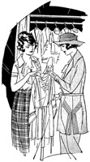
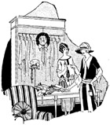

1926—The New-Way Course in Fashionable Clothes-Making
Lesson 56—Seasons and Sidelines
The Good Seasons—and the Bad
In dressmaking, more than in any other business, a great deal is dependent upon the seasons. Spring and fall are excellent seasons; there is a good volume of business during the summer and winter. But in-between these seasons there are dull periods when the business slacks—and when the shop owner loses money unless she is clever.
Being clever means simply availing the dull seasons for other purposes than dressmaking. There are many profitable side-lines ideal for the dull season, that make up for the loss in business. We will take this up later in the lesson, studying each "side line" individually.
A great many dressmakers find that the quickest way to success is through specialization. One dressmaker we have in mind, for instance, specializes in dresses for girls who are graduating from school. She has an excellent reputation for making pretty dresses of this kind—but you can readily see her business is limited to the seasons when girls graduate. She has solved the problem by making trousseaux and mourning clothes between seasons, and has built up quite a profitable volume of business with this side-line.
While we are on the subject of specialization, it will not be amiss to mention that is as an ideal way to build up a reputation for the shop. If you can make evening gowns better than anything else, specialize in that. If you like to make tailored clothes, make that your specialty. Whatever you can do best, specialize in—and let your friends, acquaintances and customers know that you are specializing in it. Then make all other phases of the business "side lines" which simply pad out your earnings and keep your business progressing.
One of the greatest assets in business is knowing what people want. Some people know this instinctively, but the majority of people have to learn from actual experience and study the things their customers like. When you know what people want, give it to them, and you will find that your business is taking care of itself. It is only when you try to sell people something they don't want, that your business begins to suffer.
There is a knack to "sizing" people up. Some dressmakers can judge, as soon as a customer enters the shop, whether she wants something original, distinctive and different, or whether she prefers something plain and conventional. She can tell the customers who like the extreme, and customers who like the simple. By "sizing" up the customer in this way, she is able to show her only what she knows will please and satisfy her, rather than something through the complete stock haphazardly in the hope of striking something that will please the customer's fancy.
Suggestions for the Christmas Season
Just as she can make her dull seasons profitable by incorporating "side lines" into her business, the clever dressmaker can make the Christmas holidays doubly profitable by utilizing little odds and ends of novelties that are so appropriate for gifts. There are countless pretty, dainty things that can be made quickly and easily by the woman who is deft with her needle and original in her methods.
There are, for instance, dainty affairs for milady's boudoir—crisp, pretty little things that can be made without much trouble at all—that are, in fact, quite enjoyable to make, and that can be sold at a substantial profit. Flower-trimmed garters are always in demand. Packed neatly in a holly box, they make an excellent gift. The garters should be decorative, daintily trimmed with tiny buds and flowers, all hand made. They may sell from 50¢ to $1.50, depending upon the materials and the amount of time devoted to the sewing. Very elaborate garters may sell for as high as $2.50.
One dressmaker, who enjoys her work and revels in her petty little shop, specializes in boudoir caps for the holiday season. Each year, before Christmas, she has a display of original, attractive boudoir caps in her window. Some are of tulle with ribbon roses; some of net and lace; some cleverly made of ribbon and wire. All are extremely dainty and presentable, and when packed in attractive little boxes make most delightful gifts. Boudoir caps range in price from 75¢ to $5.00.
Some dressmakers like to make dainty bows for lingerie, others like to make boudoir slippers of satin ribbon, trimmed with shirrings and bows. Many find interest—and incidentally, fine profit—in making bags. Attractive bits of material can be transformed into exquisite handbags that can be sold for high prices at Christmas time. For instance, an opera bag with an embroidered motif and bead fringe can be made easily from left-overs, yet will bring as much as $5.00 or $7.00 at Christmas time. A dainty little bag for a powder puff can be made in a half-hour from a bit of left-over satin or taffeta, and can be sold for 50¢ or 75¢. And there are nay number of velvet bags, overnight bags, embroidery bags, workbags, fancy bags that can be made and sold profitably at the Christmas season.
It makes no difference whether you have a shop or just a room in your home—you can utilize your space, time, and your ends of material to great advantage. Many dressmakers who start small increase their business by selling novelties such as these not only at Christmas, but all year round.
Other Side-Line Suggestions
If you love to make pretty, dainty things for children, if you enjoy handling fine laces and embroideries, you should by all means choose the making of baby things for your Christmas trade. In fact, you can make this a regular side-line and incorporate it as a special department of your regular business.
It's fun making tiny baby shoes, dainty little caps, exquisite little baby dresses, fancy boudoir ornaments for baby's safety pins, etc. Why, there's no end to the degree in which you can allow your fancy to wander! The more original you are, the prettier your creations will be. And no matter how low your prices are, you will always make a substantial profit, for the materials you use are left-overs.
Among other things, you can make hand-painted coat hangers for the infant's little dresses, rattles with handsome ribbon bows, little trinket boxes, safety pin holders, holders for bonnets, bibs, etc. These charming little novelties are very simple to copy, and always have an instant appeal to customers. Your workers can be kept busy during the dull seasons making them, and you can have a good supply ready by Christmas time to meet the demands.
It is also interesting and profitable to make, from larger pieces of material, decorative handkerchief bags for the dressing table, sewing bags, aprons, hat-pin holders, decorative dolls for the boudoir, etc. Some dressmakers even make distinctive handkerchiefs for the holiday season, and some like to make miniature hat-boxes for vanity flowers. A lamb's wool slipper sole, decorated solely with a cluster bow or satin ribbon, costs only about 30¢ but can be sold for 74¢ or $1.00.
And so we could go on endlessly, giving you suggestions for sidelines that you will not only enjoy but that will add to your profits and bring you many new customers. You must be alert, progressive, constantly watchful for new ideas and new money-making schemes. As soon as you stop progressing, your business deteriorates. It cannot stand still. It goes either forward or backward. Is your shop going to go forward? It's entirely up to you, you know.
Maternity Clothes
One of the most profitable side-lines for dressmakers is maternity clothes. There is a constant demand for cloths that are smart, modish, attractive—and comfortable—and prospective mothers are glad to pay whatever you ask providing you give them the kind of dresses in which they will feel comfortable and inconspicuous.
However, not everyone can make attractive maternity clothes. A lesson in the Course deals thoroughly with this subject, and if you study it carefully you will be able to make the kind of clothes your customers will appreciate. But do not make the mistake of trying to sell maternity clothes that are not correct, for in this way you will make one sale and lose your customer. The problem is to keep the customer and to do this you must give real service.
Making clothes for mourning is also profitable but not quite so much so as maternity clothes. Mourning clothes should be dignified, sombre, but with smart lines and made in good taste. Trousseaux are interesting to make, and extremely profitable. Some dressmakers specialize in outfitting the bride-to-be, but we do not advise this unless you are particularly deft and clever in the art of making bridal finery. If you are, make it the specialty department of your shop.
Underwear and Lingerie
If your shop is large enough to warrant it, and if you want to have a big, all-year-round business, it is profitable to incorporate an underwear and lingerie department. You may make the garments yourself, purchase them ready-made, or have your workers make them during the dull seasons. The first plan is the best, as you will be able to make underwear that is different, individual—and you will be able to charge higher prices for them.
At Christmas, Easter and other holiday seasons a good line of underwear and lingerie proves valuable in keeping the business going smoothly, instead of having the income decrease as it would ordinarily in the dull season. It is wise to have neat boxes for the underthings, with your name printed on them. Step-ins, chemises, vests, camisoles and bloomers are excellent sellers, especially when they are cleverly made with edgings and insertions of lace, fine tuckings and plaitings, dainty bows and hemstitching. Many of your regular dress customers will be glad to purchase dainty underthings of you, if you sell them reasonably enough. And you really should be able to sell them reasonably, as they cost you only what the materials alone cost—and if you purchase wisely the materials should cost you very little.
Children's Clothes
A particularly profitable branch of specialization is children's clothes. Not only is it profitable but it is extremely enjoyable, especially if one enjoys making dainty little rompers, play suits, dresses and petticoats for the youngsters.
A fine knowledge of machine sewing, a knack for making the unexpected and the original, help considerably in making the kind of kiddie's clothes that women will be glad to buy and pay good prices for. Women always like to dress their children attractively and differently and they will be glad to pay your prices if you can give them what they want.
Children's clothes can be made to order, or can be made in quantity to sell as ready-made clothes are sold. But in either case, the dressmaker should be sure the sizes are absolutely correct—that the four-year old size will fit a four-year old girl—for in children's clothes size is very important.
An attractive dressmaking shop, correctly run, is as interesting and enjoyable as it is profitable. Take pride in your shop, keep it attractive and up to date, and you will find pleasure in it. If at any time you meet some unexpected problem that is not solved for you in the pages of this book, if you feel the need of expert help or advice, do not hesitate to write to your teachers at the School of Modern Dress. They will always be glad to help you.